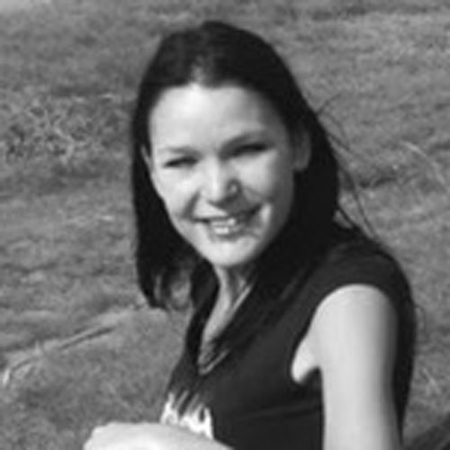

Engaging Crowds Team
For general inquiries about the project, please email The National Archives' Research team at research@nationalarchives.gov.uk.
Pip Willcox, Project PIHead of Research, The National ArchivesPip is Head of Research at The National Archives. She has a background in digital editing and book history, focussing first on encoding medieval manuscripts and later on early modern printed books. More recently, she has worked on projects linking collections and semantic web technologies, and social machines. Before joining The National Archives, Pip spent 13 years at the University of Oxford. She led the University's Centre for Digital Scholarship since establishing it in 2015, and worked with colleagues in Humanities to develop a research-led Master's programme in Digital Humanities. She directed the Digital Humanities at Oxford Summer School and was a Senior Researcher at the Oxford e-Research Centre. |
Elspeth Haston, Project CIDeputy Herbarium Curator, Royal Botanic Garden EdinburghElspeth leads the digitisation programme at RBGE which has included the development of tools, processes and workflows for digitising herbarium specimens and related images and documents. She is actively involved in digitisation development in Europe as the chair of the Digitisation Working Group of the Consortium of European Taxonomic Facilities (CETAF) and co-chair of Working Group 2 (Digitisation) of the EU-funded MOBILISE project. Elspeth also works on the curation of collections. Her background is in taxonomic research, within the Leguminosae and Gesneriaceae families. |
 | Chris Lintott, Project CIProfessor of Astrophysics/Citizen Research Lead, University of OxfordChris Lintott is a professor of astrophysics at the University of Oxford, where he is also a research fellow at New College, working on topics from galaxy evolution, transient detection and machine learning. As Principal Investigator of the Zooniverse, he leads a team who run the world’s most successful citizen science projects, allowing more than a million people to discover planets, transcribe ancient papyri or explore the Serengeti. A passionate advocate of the public understanding of science, he is best known as co-presenter of the BBC’s long running Sky at Night program. His book, 'The Crowd and the Cosmos', is now available from Oxford University Press. |
 | Martin Salmon, Project CIResearch Curator & Archivist, National Maritime MuseumMartin has worked as an Archivist with the manuscript collections in the National Maritime Museum's Caird Library and Archive, the largest maritime library in the world, for 14 years. More recently, he has been seconded to the Curatorial team to research archival resources for the Museum's Research Strategy. |
Dr Samantha BlickhanHumanities Research Lead, ZooniverseDr. Samantha Blickhan is the Zooniverse Humanities Research Lead and co-Director of the Zooniverse team at the Adler Planetarium in Chicago. In her role, she oversees development of new tools to support Humanities and GLAM-based research projects on the Zooniverse platform, as well as working directly with teams to help them in the process of conceptualizing and creating projects. Trained as a musicologist with a focus on medieval studies and palaeography, her most recent research includes methodological studies of crowdsourced transcription and the relationship between crowd transcription and automated text recognition. |
Stuart BlighHead of Research and Information, Royal Museums GreenwichStuart Bligh is Head of Research and Information at Royal Museums Greenwich with responsibility for the curatorial, library and archive teams. He is a librarian and archivist who previously worked in Kent, Bexley and Croydon and has a special interest in the maritime history of Kent and maritime archives more generally. |
 | Will ButlerHead of Military Records, The National ArchivesWill is Head of Military Records at The National Archives. Previously he worked as a Lecturer in modern British military history and as an Outreach Officer at the University of Kent. Alongside teaching postgraduate and undergraduate courses at the university, he ran a project which sought to engage school students with the study of the First World War between 2015 and 2019, working with them in the classroom, at the university, producing exhibitions, performances, and supporting the GCSE and A Level curriculum. His book, The Irish Amateur Military Tradition in the British Army, 1854-1992, which was based on his PhD thesis, was published in 2016, and his latest co-authored book, The Disparity of Sacrifice; Irish Recruitment to the British Armed Forces, 1914-1918 came out in July 2020. He has also published articles relating to the army demobilisation strikes at the end of the First World War, on the Ulster Home Guard during the Second World War, and about the role of the British Army in Upper Silesia in 1921-22. |
 | Liz FultonAcademic Communications and Impact Officer, The National ArchivesLiz is Academic Communications and Impact Officer for The National Archives’ Research and Academic Engagement team, where she promotes research projects, programmes and events. After receiving her Bachelor of Arts in Art History from McGill University in 2011, she worked in communications roles in organisations in the arts and culture sector before joining The National Archives. |
Grant MillerProject Manager, ZooniverseA former exoplanet researcher, Grant is now Project Manager of the Zooniverse citizen science platform based at the University of Oxford. His job involves managing an international community of researchers, volunteers, and web developers with the goal of enabling and progressing research across multiple diverse disciplines such as astronomy, ecology, biomedical sciences, and the humanities. |
 | Sally KingDigitisation Officer and Herbarium Volunteer Coordinator, Royal Botanic Garden EdinburghSally is part of the team responsible for the digitisation of herbarium specimens and items held within library and archives at RBGE. As Herbarium Volunteer Coordinator, Sally coordinates both the in-house departmental programme, as well as the online citizen science projects. |
Bernard OgdenResearch Software Engineer, The National ArchivesBernard is a Research Software Engineer at The National Archives, working on digital aspects of research projects and with interests in both digital and traditional approaches to history and archives. Before joining TNA he completed an MA in Historical Research at Birkbeck College,University of London and prior to that he was a software engineer in the private sector, working on software development tools in a variety of roles and disciplines. |
 | Louise SeawardAcademic Engagement Manager, The National ArchivesLouise is Academic Engagement Manager at The National Archives, where she organises academic events, oversees student programmes and facilitates collaborative research. She received her PhD in History from the University of Leeds in 2013 and most recently worked as a Research Associate at the Bentham Project, University College London. |
|  | Becca HutcheonDigital Scholarship Researcher, The National ArchivesBecca is Digital Scholarship Researcher at The National Archives where she focuses on conducting and enabling research into the uses of digital technologies in approaching The National Archives’ collections. As well as digital scholarship, her research expertise centres on literary geographies, spatial theory, narratology and the long 19th century – in particular late-Victorian and Edwardian fiction and Romantic poetry. Both her PhD and MA (awarded by the University of Bristol) concerned the space – fictional and actual – of fin-de-siècle prose. Before joining The National Archives, Rebecca worked as a Research Associate on the Arts and Humanities Research Council-funded 'Chronotopic Cartographies for Literature' at Lancaster University, investigating how digital tools can be used to analyse and visualise literary texts. |
Mark BellSenior Digital Researcher, The National ArchivesMark is a Senior Digital Researcher at The National Archives, where he has worked for 7 years. He has a wide range of research interests including handwritten text recognition, crowdsourcing, probabilistic record linkage, and applications of AI to archival challenges. When he’s not experimenting with interesting data, Mark also enjoys training archivists in Machine Learning, and is currently collaborating on an introductory course in AI through Library Carpentries. |